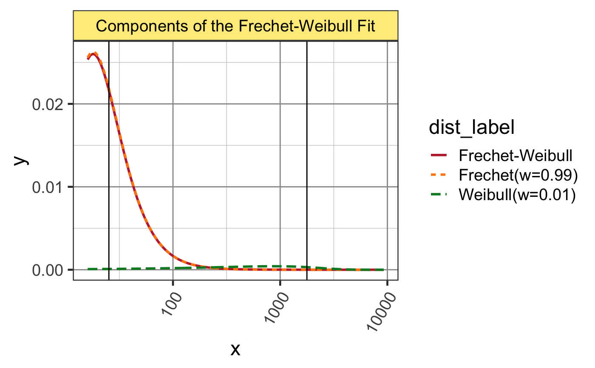
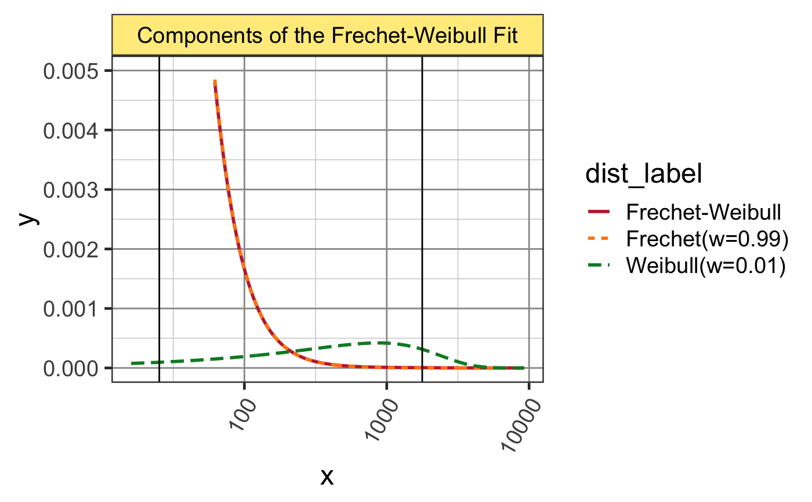
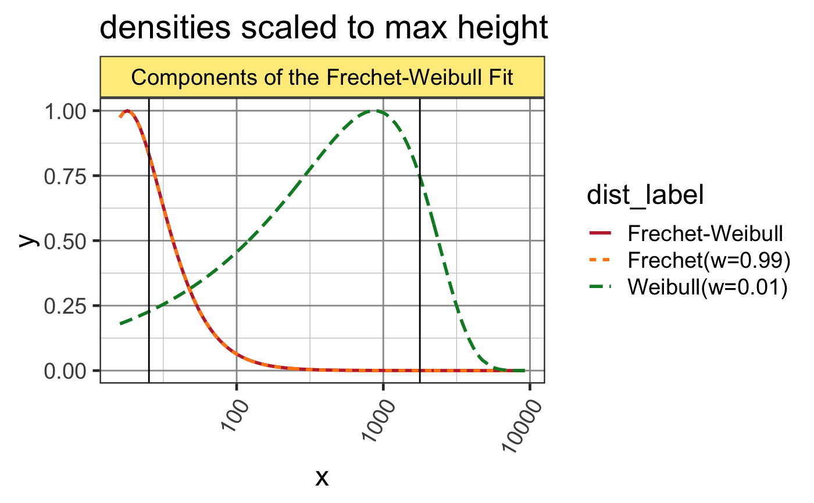
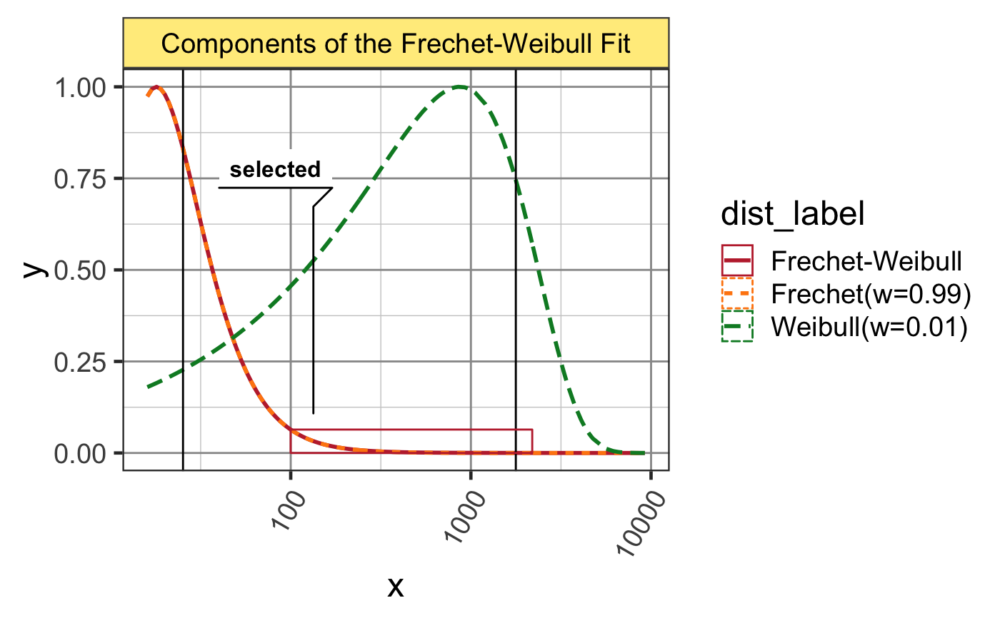

Plot Frechet-Weibull fit
plot_fr_wei(fit, addx = NULL, ylim = NULL, xlim = NULL, scale_y = FALSE, log = "x", type = c("gg", "base"), highlight_range = NULL, do_facet = TRUE, ...)
| fit |
|
|---|---|
| addx | optional numeric vector of x values to add to the x-axis range. |
| ylim, xlim | optional numeric vector describing the y-axis or x-axis limits, respectively. |
| scale_y | logical indicating whether to scale the densities to common maximum height of y=1. |
| log | character vector indicating the axis or axes
log-transform, with any presence of |
| type | character string indicating the type of plot,
where |
| highlight_range | optional numeric range to highlight, intended to represent the range of counts selected for downstream analysis. |
| do_facet | logical indicating whether to create a
|
| ... | additional arguments are ignored. |
This function plots the two distributions, Frechet and Weibull, using the fit parameters provided.
library(salsa); data(oz2_numi_per_cell); param_fr_wei <- params_fr_wei(); usecounts <- sort(oz2_numi_per_cell$count); usecounts <- usecounts[usecounts >= 16]; fit1 <- fitdist_fr_wei(x=usecounts, param_fr_wei=param_fr_wei);#> Warning: Some parameter names have no starting/fixed value but have a default value: verbose.#> Warning: The dfr_wei function should raise an error when names are incorrectly named#> Warning: The pfr_wei function should raise an error when names are incorrectly namedplot_fr_wei(fit1);#> Warning: package 'colorspace' was built under R version 3.5.2#> Warning: Removed 80 rows containing missing values (geom_path).